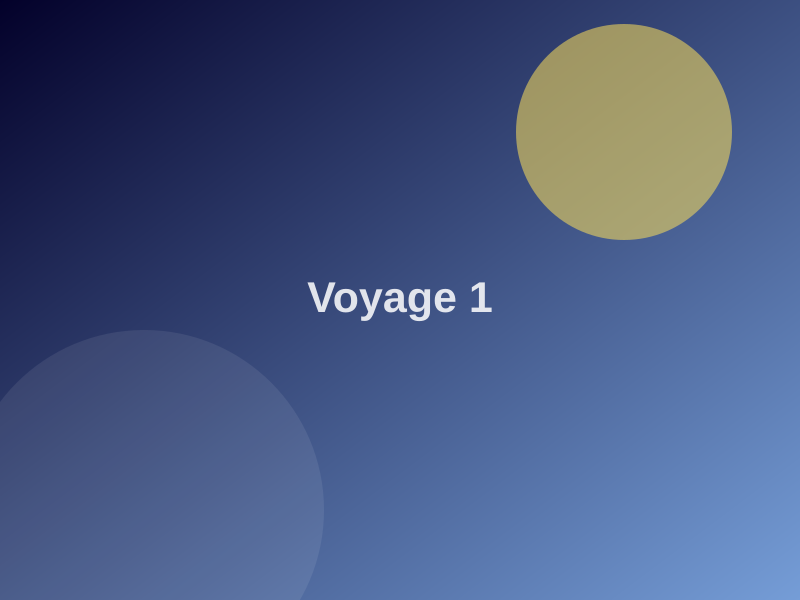
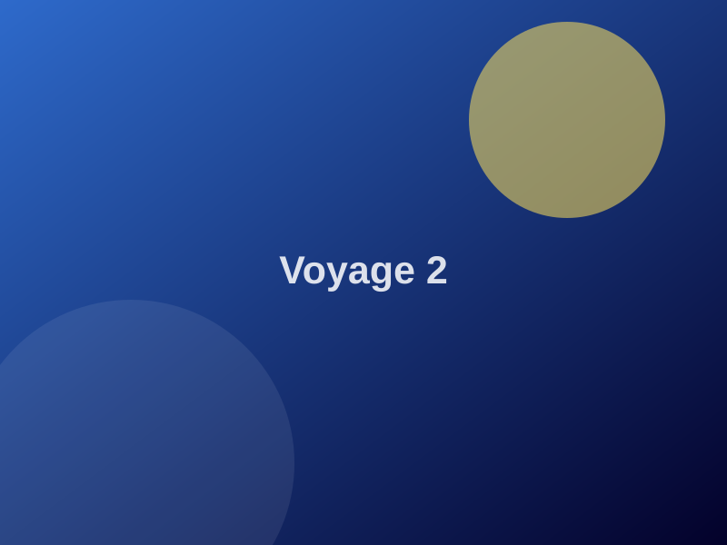
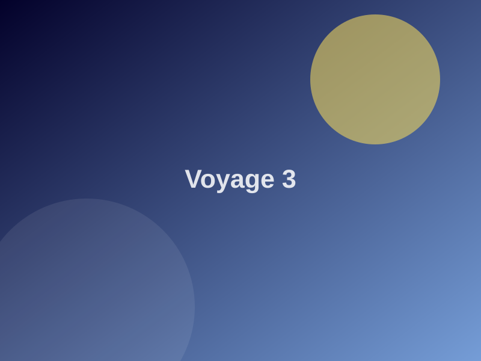

01 · My story
Every destination opens me up to other ways of living, working and seeing the world. [Tell here a highlight from one of these trips, and your next dream destination.]
02 · What it brings to my work
Coordinating a project across 12 European countries takes curiosity and openness: understanding everyone’s habits, adapting your message, finding common ground. Travelling prepared me for it.
03 · In pictures
A few memories


